Aaron Kagawa
Philip Johnson
Collaborative Software Development Laboratory
Department of Information and Computer Sciences
University of Hawaii
kagawaa@hawaii.edu
johnson@hawaii.edu
CSDL-03-14
http://csdl.ics.hawaii.edu/techreports/03-14/03-14.html
Last update: 04/12/2004 08:19:06 AM
This report presents selected round two results from Hackystat-based descriptive analyses of Harvest workflow data gathered from the Mission Data System software development project from January, 2003 to December, 2003. The information provided in this report describes improvements and differences between the previous techreport (The Hackystat-JPL Configuration: Overview and Initial Results, http://csdl.ics.hawaii.edu/techreports/03-07/03-07.html).
Until this point in our research we have been concerned with answering the general question, "Can Hackystat provide insights into the development process of MDS?". We believe that the previous report shows that at least some interesting analyses are capable with the scope of data that can be extracted from Harvest. Thus, it make sense to continue our research. Now, we are concerned with "Are we collecting the right data and are we analyzing the right things?" and "What specific insights can we look into?". In other words, it seems that we are now ready to look at specific issues, opposed to the general level that we have been operating on.
There are two reasons why we can redirect our research. First, the Sensor Data is significantly higher in quality. Until this point the data we received were either incomplete, wrong, or malformed. Second, we believe the current set of analyses introduces interesting research questions.
In this report, we provide another set of questions about the Sensor Data and Analyses.
Much of this report will talk about how the "correctness" of the Build and StateChange data has improved thus changing the analyses. Section 1.1 discusses the progress that has been made. However there are still a couple of issues present with the current set of data, Sections 1.2 and 1.3 discuss some (potential) problems.
This section provides a summary of the progress that has been made in getting the sensor data to an acceptable quality.
It was our understanding that CM Build State includes a compilation, linking and testing. The Build SDT provides a specification of what failed during the build, denoted by failureType. We have also have attributes for testPassed and testFailed which should represent the number of test that passed and the number of tests that failed, during the testing phase of the build. The following is an example of Build Sensor Data from January 1, 2003.
<?xml version="1.0" encoding="UTF-8" ?> - <sensor> <entry tstamp="1041949980009" tool="Sensor Shell" packageId="iar-01923,iar-01928,iar-01933" testsPassed="0" testsFailed="0" failureType="compile"/> <entry tstamp="1041962700010" tool="Sensor Shell" packageId="iar-01923,iar-01928,iar-01933" testsPassed="0" testsFailed="0" failureType="compile"/> <entry tstamp="1041967740011" tool="Sensor Shell" packageId="iar-01923,iar-01928,iar-01933" testsPassed="0" testsFailed="0" failureType="runtime"/> <entry tstamp="1041984840012" tool="Sensor Shell" packageId="iar-01923,iar-01928,iar-01933,iar-01936" testsPassed="0" testsFailed="0" failureType="runtime"/> </sensor>
As you can see the last two Builds contains a "runtime" failure. We believe that this represents a test failure. However, there is no indication of how many test failed or how many tests passed. Is this data obtainable?
All the attributes of the StateChange Sensor Data are not being used. The following is an example Sensor Data Entry.
<entry tstamp="1043462911371" tool="Sensor Shell" packageId="IAR-01959" startState="dev" endState="dev complete"
newFiles="MDS_Rep/source/Msl/Ma/Rovers/Position/PositionAndHeadingFullConstraint.cpp,
MDS_Rep/source/Msl/Ma/Rovers/Position/PositionAndHeadingFullConstraint.h,
MDS_Rep/source/Msl/Ma/Rovers/Position/WaypointConstraint.cpp,
MDS_Rep/source/Msl/Ma/Rovers/Position/WaypointConstraint.h"
modifiedFiles="" deletedFiles="" unchangedFiles="" iar="" developer="cxing" />
The StateChange Sensor Data provides attributes that consider the files associated with the StateChange: newFiles, modifiedFiles, deletedFiles, and unchangedFiles. Other than newFiles the data shows that the other file attributes are not being utilized. There are 5 of the 1421 work packages that have modified files. And there are 5 of the 1242 work packages that have deleted files.
If these file attributes provide the exact set of files associated with each work package, then the hackyJPLBuild system can recognize possible dependency problems before they actually occur, ie File Entanglement. Currently, the hackyJPLBuild analyses use the larger-grained work package information (i.e. not their associated files). Once the package-level analyses settle down we would like to look into issues of dependency and entanglement.
The following subsections present examples of significant changes in the analysis due to data quality.
This system summary page is intended to provide a high level overview of the numbers and kinds of entities under analysis.
This analysis presents some overall statistics regarding the data currently present in the system.
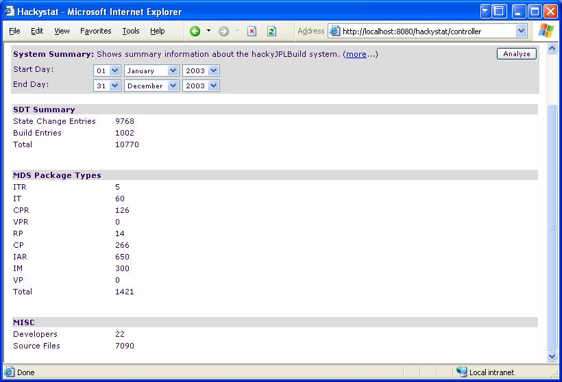
This system summary page is intended to provide a high level overview of the numbers and kinds of entities under analysis. In this case, the system summary generates the following question:
This analysis shows how the various MDS packages moved between workflow states over a given period of time. The first screen below provides two tables, one that displays the types and occurrences of "forward" transitions, and one that counts the types and occurrences of "backward" transitions:
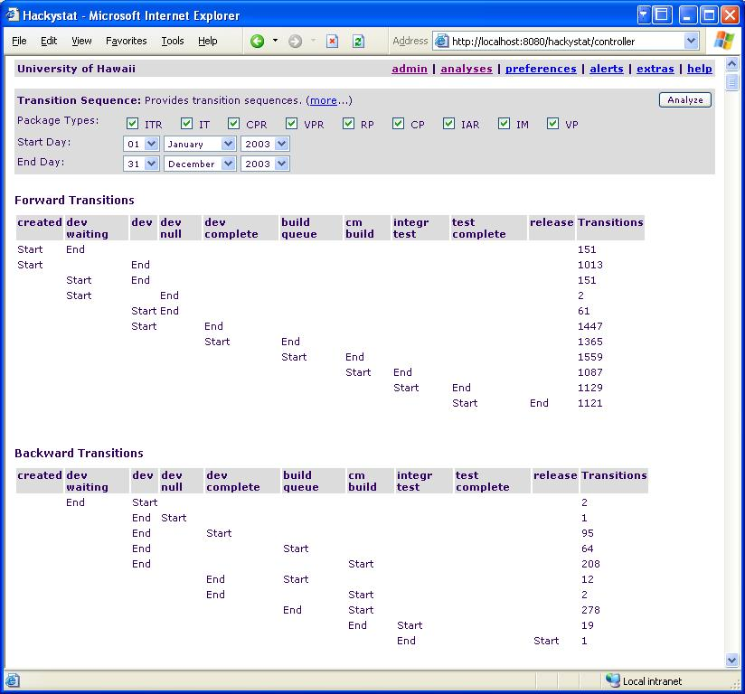
There are a couple of things that we notice here:
As noted in the previous report, we discovered that the sequences of state transition data entries provided to us did not always appear to be "legal", in that the end state of one transition is equal to the start state of the next transition in chronological order. The improvements to the data has drastically reduced the amount of illegal transitions.
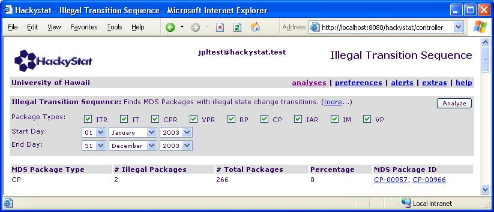
Just as a reminder a "Illegal Transition" is a transition where the start state of a transition does not equal the end state of the previous transition. In the case of CP-00966 the illegal transition occurs between the transitions CM->Integration Test and Test Complete->Release.
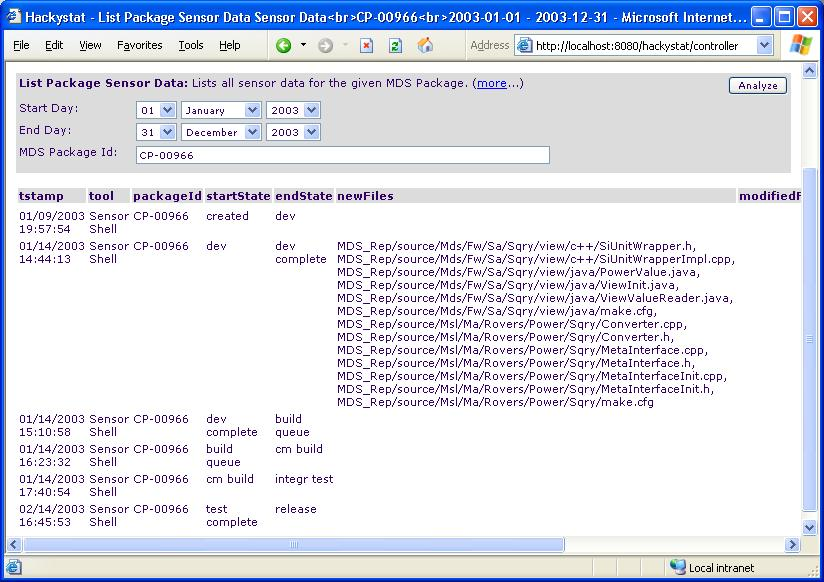
The Promotions vs. Demotions analysis provides a perspective on both development "velocity" (as represented by the number of promotions) and its "friction" (as represented by the number of demotions) over time. This analysis is a aggregation of Forward and Backward Transitions that are shown in Transition Sequence Analysis. For the following example, we display promotions and demotions in a monthly chart.
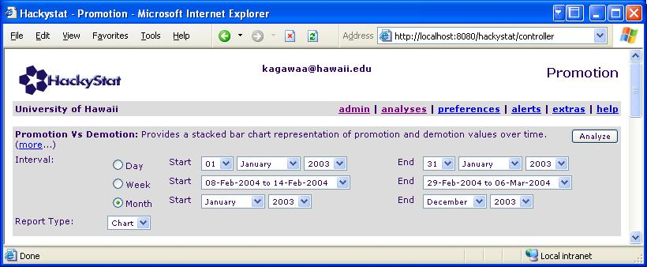
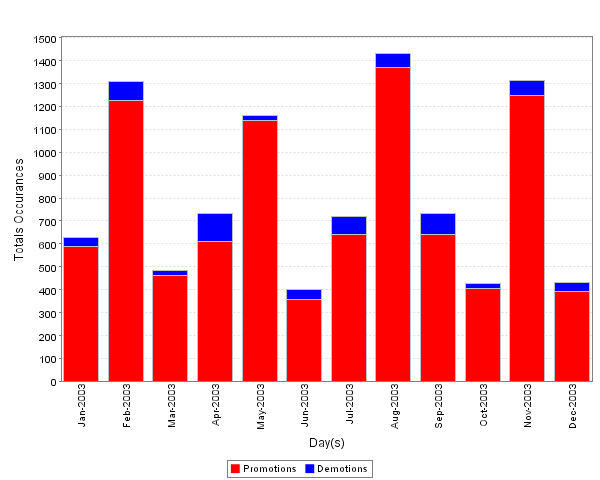
The following questions appeared in the previous report but weren't answered.
Even though monthly intervals do not have much variation in Promotions Vs Demotions. I have found a greater variation at the day interval during April 2003.
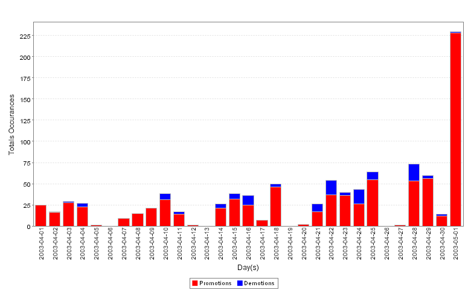
For example, one could say that April 21, 2003 was a bad day, where 9 of the 26 transitions where Demotions. Interesting questions like what caused this unproportunate amount of Demotions arise. In addition, it appears in this month and in other months, that once a Demotion occurs one of two things happen: (1) there are Demotions the next day as well and/or (2) the number of promotions are affected. This makes sense in that the developers should be in the Rework phase. Also, Demotions is caused by dependency the problem could cause a ripple affect causing other Demotions throughout the system.
This analysis attempts to represent the proportional effort allocated to "new" work activities vs. "rework" activities. The approach used is to count the number of transitions from Dev to Dev Complete, and categorize them as a "Work" transition or a "Rework" transition. A "Work" transition is defined as a transition involving a Change Package without an associated IAR. A "Rework" transition is defined as a transition involving an IAR, an IM, or a Change Package with an associated IAR. In some sense, "rework" combines both defect repair and unscheduled work.
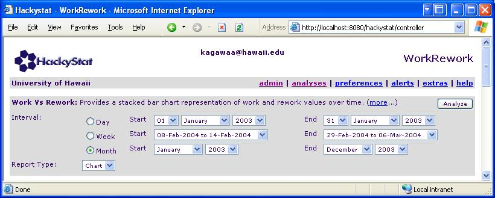
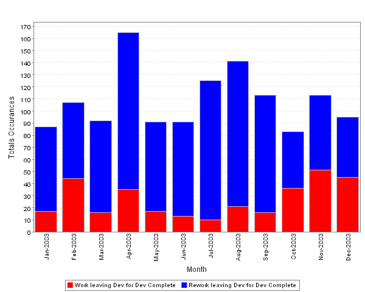
Obviously, this analysis shows that "Rework" is a significant source of effort. In fact, there are approximately 3 times more IARs and IMs than CPs. Furthermore, we claim that CPs that have been demoted back to Dev and then promoted to Dev Complete also qualifies as Rework. However, we do not count that towards Rework so in fact the number of Work could be reduced significantly.
Looking at the day interval, we see that most days are spent on Rework. Rarely, is there a day that Work dominates.
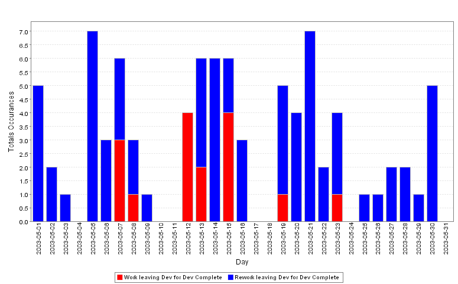
We have obtained a bunch of "MDS Build Worksheets" which provide detailed information about the Build events during that day. In the first section of the worksheet (the token expiry Section) the work packages that have been "squared" are packages that have entered and moved from the specified Harvest State. For example, CP-1224 started the day in the Build Queue. It was then built in CM Build and stopped its movement there. That means that CP-1224 has either a compilation, linking, or testing failure. The second section, provides the results of a CM Build.
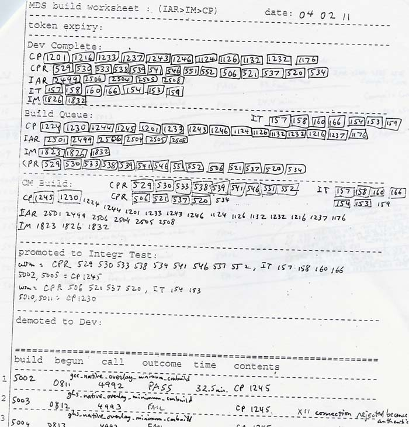
We don't know exactly what this information is used for. More importantly, it would be really hard to extract statistics from this paper version. Therefore, we have built the coresponding equivalent Hackystat Analysis to this MDS Build Worksheet. It is a really useful analysis to show a summary of what happend on a specific day. The following is the Build Worksheet analysis.
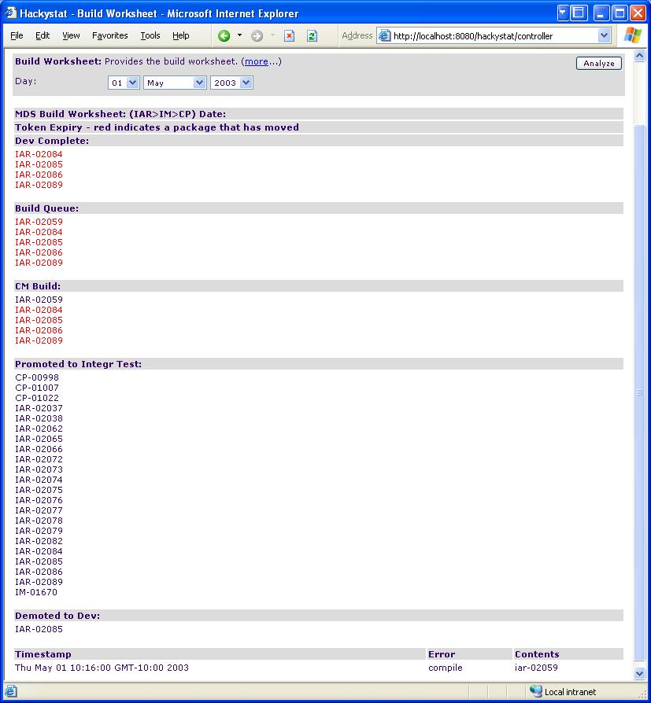
As you can see, it is quite obvious that that a compile error kept IAR-02059 from being promoted to the Intergration Test State. One glaring problem appears. Notice that the Results of the CM Build indicates that only one build occured with a single package IAR-02059. What happened to the other packages that were in the Build Queue and made it to CM Build. Furthermore, how did the long list of packages get promoted to Integration Test without being built.
The next several analyses provide a Box-and-Whisker chart representation. This section documents the visual structure and interpretation of the box and whisker chart:
| Visual Representation | Statistical Meaning |
| Horizontal line (inside box) | The median of the observations |
| Solid black dot | The mean of the observations |
| Solid colored box | The interquartile range (IQR). Divide the observations into four equal groups. The box represents Q2 and Q3. |
| Upper whisker | Observations (if any) with values up to 1.5 times the highest IQR value. |
| Lower whisker | Observations (if any) with values down to 1.5 times less than the lowest IQR value. |
| Unfilled circle | Outliers: observations between 1.5 and 3 times greater than (or less than) the highest (or lowest) IQR value. |
| Triangle | Extremes: observations beyond 3 times the IQR. Indicates data points outside the chart. |
This analysis generates box-and-whisker charts to illustrate the distribution of age values for the set of package types specified as a parameter to the analysis. Only those packages that made it to the Release state are included in this analysis, since that is required to compute their "final" age.
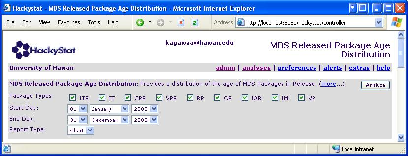
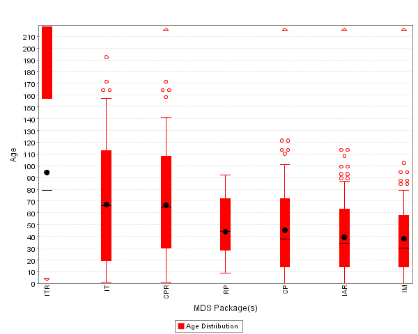
Running this analysis on the new set of data shows two differences from the old data we received; (1) there is less variability in Age for RP, CP, IAR, and IMs package types and (2) there is a greater variability in the ITR, IT, and CPR package types. You can see the previous Box and Whisker chart here, http://csdl.ics.hawaii.edu/techreports/03-07/03-07.html#3.8. Hopefully, as the data set grows there will be less variability in the Age of released packages.
We claim that this analysis is too coarse-grained to provide anything that is useful. The Released Age of a package is an "after-the-fact" measurement and probably cannot provide any help with identifying potential problems during the "life" of the workpackage. However, we believe that this analysis can be useful if we can identify reasons, factors, or attributes that contribute to a Work Package's Released Age that lay out side of the Interquartile Range.
For example, a future Hackystat analysis can be built to find the specific Work Packages' that have a unordinary Released Age and identify the factors such as amount of files, the degree of entanglement, the amount of rework, the number of demotions, etc that can contribute to a unordinary Released Age. Once these factors have been identified then Hackystat can send "Red Flags" that notify the appropriate JPL personel that a particular Work Package has attributes that could mean that the package will take a longer than usual amount of time to reach Release. NOTE: we should probably use Test Complete Harvest State due to due to the following statement by Rich Hug,
"The methodology is set up such that as each package passes the test suite, the package is moved to Test Complete. When a release is to be made, all packages in Test Complete are moved to Release. For purposes of metrics, I believe that we can interpret that a package is "closed" when it moves to Test Complete".
Therefore, I believe that this analysis should actually be calculating the Test Complete Age to accurately reflect the time it takes for a Work Package to reach the Release State.
This analysis takes the specified package type, and collects all of the instances of that package type that have a transition recorded for them between the specified start and end date and that have not reached the Release state. By excluding packages that have reached the Release state, the analysis provides a perspective on the packages currently in the "pipeline" during the specified period.
For each of these active package instances, we find the number of days it spent in each of the Harvest states, and graph that distribution as a box-and-whisker chart.
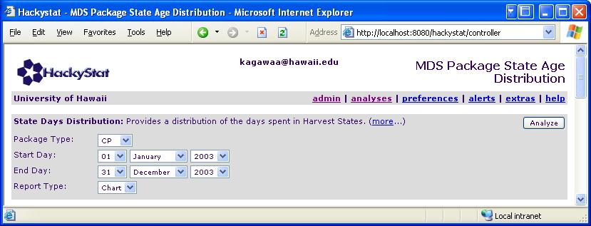
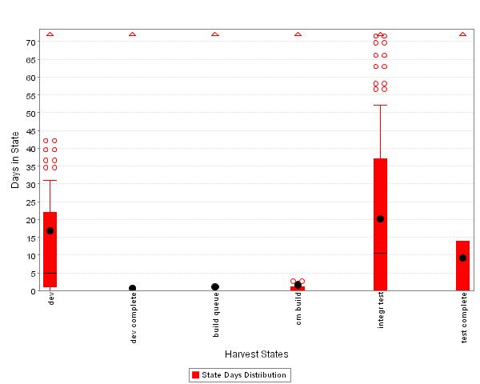
The above analysis shows the amount and variability in time spent in the various states for Change Packages. This chart shows that Change Packages spend most of their time in Dev, Integration Test, or Test Complete. This analysis shows that there is less variablity in the Dev Harvest State and more variablity in the Integration Test Harvest State compared to the previous amount of data that we received. What is interesting is why is there a "delay" in the Intergration Test Harvest State? The following screen shot shows an example Work Package that took about 3 months to move from Integration Test to Test Complete.
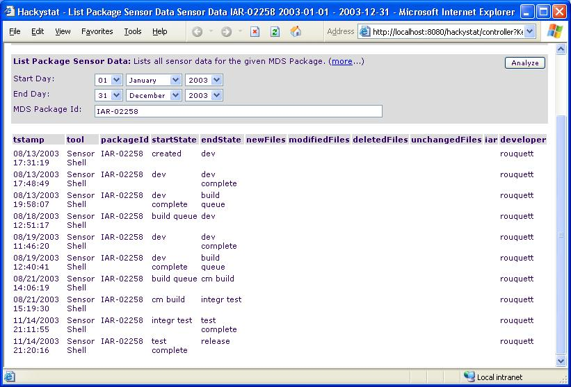
A re-running of this analysis specifying IAR as the package type reveals a different distribution, as illustrated next:
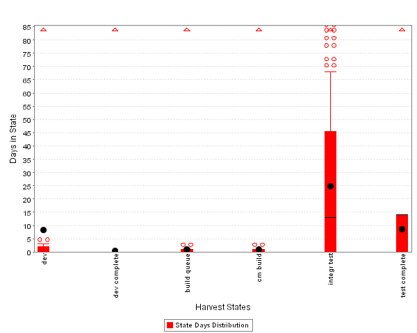
The IARs have considerably less amount of time spent in the Dev Harvest State compared to Chackage Packages (CP). Why is that? What would be interesting to determine is does the low amount of time spent in Dev influence the number of Demotions that a particular Work Package has?
The MDS Package Summary analyses provides a tabular representation of the data
available in the system between the chosen start and end days. The following
screen shot shows the different selections that are possible with the analysis.
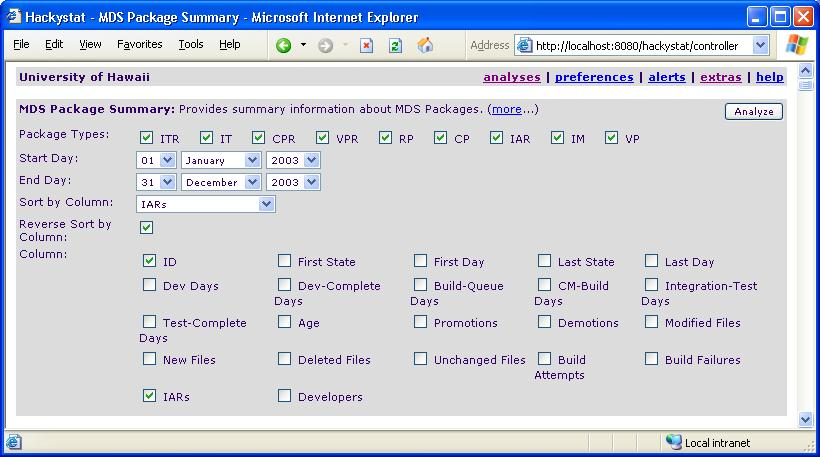
The first screen shot shows IARs that are associated with a CPR, sorted so that the IARs with CPR association are at the top of the page.
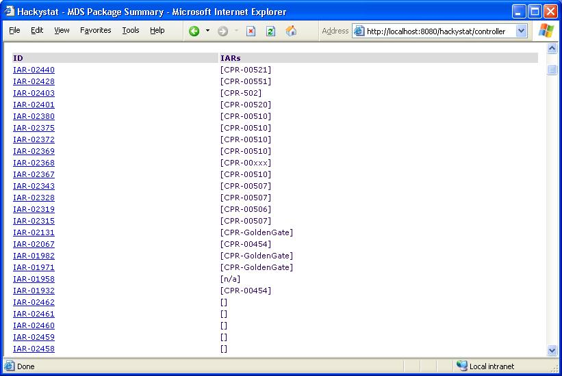
As you can see there is a very low number of IARs that are associated with a CPR. Rich Hug said, "IARs are associated only with CPRs." Should all IARs be associated with a CPR? Currently there are only 19 (out of 650) IARs assocaited with a CPR. In addition, there are only 10 (out of 126) unique CPRs that have an associated IAR. However, we are not sure what and how we would use this information.